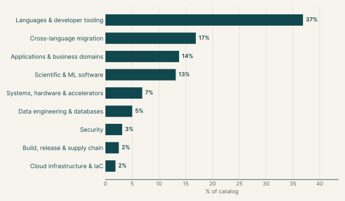
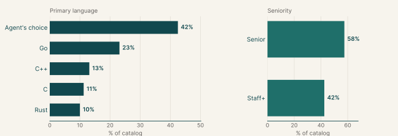
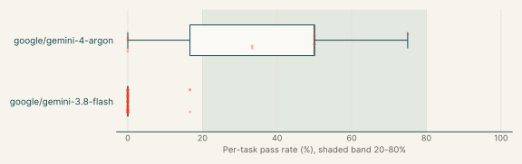
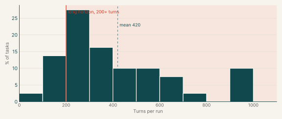
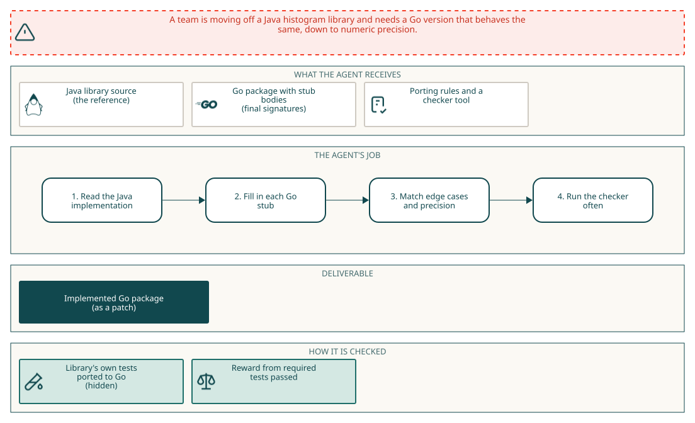

ProgramBench and Migration
Executive summary
Each task asks the agent to make software behave exactly like a reference version that it can run but not read. In the reimplementation tasks the agent writes a new program from scratch, in a language of its choice, from the reference and its documentation. In the upgrade tasks the agent brings an existing repository up to the reference's newer release by changing its code. In the migration tasks the agent ports a Java or Rust library to Go or C++ behind fixed signatures. Hidden tests compare the result with the reference, output for output.
Gemini 4 Argon passes 39% of its runs on these tasks, and it fails every run on 27% of the tasks. Gemini 3.8 Flash passes 1%, and it fails every run on 96% of the tasks. The main languages are Agent's choice (42%), Go (23%) and C++ (13%).
| Languages & developer tooling | Rebuild or upgrade compilers, interpreters, API tools and command-line tools so they behave exactly like the reference. | 37% |
| Cross-language migration | Port a library to another language, keeping its numeric precision, error cases and result ordering. | 17% |
| Applications & business domains | Rebuild or upgrade media encoders, decoders and converters with identical output. | 14% |
| Scientific & ML software | Rebuild or upgrade scientific and numerical programs whose results must match the reference. | 13% |
| Systems, hardware & accelerators | Rebuild or upgrade compression, data-integrity and system tools with byte-identical output. | 7% |
| Data engineering & databases | Rebuild or upgrade parsers, serializers and storage tools for structured data. | 5% |
| Security | Rebuild or upgrade cryptography, secret-scanning and compliance tools. | 3% |
| Build, release & supply chain | Rebuild or upgrade build and dependency tooling. | 2% |
| Cloud infrastructure & IaC | Rebuild or upgrade configuration-management and cloud tooling. | 2% |
Why this catalog
Problems engineers face
Engineers often have to make software behave exactly like a version they cannot reuse: rebuilding a tool whose source is unavailable, bringing an old codebase up to a newer release, or replacing a Java or Rust dependency with a port in Go or C++. In each case the specification is observable behaviour. The hard part is inferring the rules from outputs and documentation, then matching exit codes, output, file effects, numeric precision and result ordering without seeing the tests.
How the tasks reproduce them
Reimplementation and upgrade tasks give the agent a reference program it can run but not read. For a reimplementation, the agent writes a source project and a compile.sh from the reference and its documentation. For an upgrade, the agent changes an existing repository in /app/repo, which is built with a fixed /opt/task/build.sh. Migration tasks provide the original source and a skeleton with final signatures, and most add a mig-check tool. Every task runs offline, and hidden tests compare the result with the reference.
Typical prompts
- Reproduce the documented behaviour of an execute-only program, delivered as source code plus
compile.sh. - Update an existing repository to match a reference program, after first writing a research and plan file.
- Port a named Java or Rust library to Go or C++ from a reference folder, keeping the given signatures, within per-test time and memory limits.
Domain breakdown
Share of tasks by domain

Language and seniority
Primary language and seniority

Primary language
| Agent's choice | 42.5% |
| Go | 23.1% |
| C++ | 13.1% |
| C | 11.2% |
| Rust | 10.0% |
Seniority
| Senior | 57.5% |
| Staff+ | 42.5% |
Gemini pass rates across the catalog
| google/gemini-4-argon | 39% | 27% | 73% | 0% |
| google/gemini-3.8-flash | 1% | 96% | 0% | 0% |
Per-task pass rate by Gemini model

Turn counts and long-horizon tasks
A task's turn count is the average over its Gemini runs. A task is long horizon when that average is 200 or more turns.
| Average turn count | 420.4 |
| Median turn count | 341.1 |
| Range | 88 to 1000 |
| Long-horizon tasks (200+ turns) | 84% of tasks |
Turns per task

| google/gemini-3.8-flash | 84% | 471.2 | 84% |
| google/gemini-4-argon | 19% | 257.1 | 67% |
| google/gemini-3.7-flash | 2% | 152.3 | 17% |
Example tasks from the shortlist
The first example is a main sample for the catalog; the others are attached samples. All of them come from the shortlist and have Gemini runs that pass at most half the time.
Example 1: Statistics & numerical methods (Go)
| Sample | Main sample for the catalog |
| Final category | Migration |
| Domain | Cross-language migration |
| Sub-domain | Statistics & numerical methods |
| Language | Go |
| Seniority | Senior |
| Turn count | 433 (google/gemini-3.8-flash), 244 (google/gemini-4-argon) |
| Long horizon | yes |
Prompt shape: A first-person request to port a named library to Go from a source directory, with stubbed signatures given and the tests withheld, followed by a bullet list of build, naming and import rules.
Prompt
Full instruction given to the agent (instruction.md)
We're moving a dependency from Java to Go, and I need a Go port of the dynatrace-oss/dynahist library. The Java source is in /app/java_reference/. I've already laid out the Go package in /app/port/: every type and function our code calls is there with its final signature, but the bodies are just stubs. Could you fill in the implementation so it behaves exactly like the Java library?
When you're done, I'll run the library's own test suite, ported to Go, against /app/port. I'm not including those tests here, so please work from the Java source itself and match it closely: error cases, edge cases, numeric precision and the order things come back in.
A few things that will save you some pain:
- Keep the signatures and the package name in
/app/portas they are; our callers use them as-is. Edit the existing files in place and declare each type and function once. - Run
mig-check(on the PATH) often. It compares/app/portwith the original stubs, runsgo buildandgo vet, and flags package-level names that clash with our test helpers (they start withmigorMig). - Go's
regexpis RE2, so Java-only syntax such as the(?u)flag, back-references, look-around and\u{...}escapes makes a package-levelregexp.MustCompilepanic at start-up. - This package ends up inside a sandboxed service, so every non-test
.gofile under/app/portmust stay offos,os/exec,syscall,runtime,plugin,net,net/http,net/rpc,io/ioutil,embed,unsafe,flagortesting(and anything undertesting/), cgo, and the//go:linknameand//go:embeddirectives. Write the logic yourself rather than calling out to another program; the rest of the standard library is fine. - Our test machine has 2 vCPUs, and each test gets 60 seconds and a 2 GB address-space limit, so keep things reasonably efficient.
Pass rates
| google/gemini-4-argon | 33% | 0.33 |
| google/gemini-3.8-flash | 0% | 0.00 |
Environment
How the task works

How it maps to the work
A research software engineer needs a Go port of a Java histogram library. The work is to reproduce histogram layouts and floating point behavior from the Java source, since the instruction asks for matching numeric precision.
Example 2: Graph algorithms (Go)
| Sample | Attached sample |
| Final category | Migration |
| Domain | Cross-language migration |
| Sub-domain | Graph algorithms |
| Language | Go |
| Seniority | Senior |
| Turn count | 306 (google/gemini-4-argon) |
| Long horizon | yes |
Prompt shape: A first-person request to port a named library to Go from a source directory, with stubbed signatures given and the tests withheld, followed by a bullet list of build, naming and import rules.
Prompt
Full instruction given to the agent (instruction.md)
We're moving a dependency from Rust to Go, and I need a Go port of the kookyleo/dagre-rs crate. The Rust source is in /app/rust_reference/. I've already laid out the Go package in /app/port/: every type and function our code calls is there with its final signature, but the bodies are just stubs. Could you fill in the implementation so it behaves exactly like the Rust crate?
When you're done, I'll run the crate's own test suite, ported to Go, against /app/port. I'm not including those tests here, so please work from the Rust source itself and match it closely: error cases, edge cases, numeric precision and the order things come back in.
A few things that will save you some pain:
- Keep the signatures and the package name in
/app/portas they are; our callers use them as-is. Edit the existing files in place and declare each type and function once. - Run
mig-check(on the PATH) often. It compares/app/portwith the original stubs, runsgo buildandgo vet, and flags package-level names that clash with our test helpers (they start withmigorMig). - Go's
regexpis RE2, so Rust-only syntax such as the(?u)flag,\u{...}escapes, back-references and look-around makes a package-levelregexp.MustCompilepanic at start-up. - This package ends up inside a sandboxed service, so every non-test
.gofile under/app/portmust stay offos,os/exec,syscall,runtime,plugin,net,net/http,net/rpc,io/ioutil,embed,unsafe,flagortesting(and anything undertesting/), cgo, and the//go:linknameand//go:embeddirectives. Write the logic yourself rather than calling out to another program; the rest of the standard library is fine. - Our test machine has 2 vCPUs, and each test gets 60 seconds and a 2 GB address-space limit, so keep things reasonably efficient.
Pass rates
| google/gemini-4-argon | 50% | 0.50 |
Environment
How the task works

How it maps to the work
A library engineer is replacing a Rust graph-layout dependency with a Go package. The engineer has the crate source and a Go skeleton with final signatures. The work is to read the layout stages in the Rust source and reproduce their output, including coordinates and edge points, in Go.